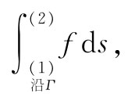

在第2章中，我们已找到对场进行微商的各种方法，结果有的得出矢量场，有的得出标量场。虽然我们曾导出许多不同公式，但从第2章所得的一切中可以归纳成一个法则：算符∂/∂x，∂/∂y和∂/∂z就是一个矢量算符▽的三个分量。现在我们希望对场的微商的意义获得某种理解，然后才会对矢量场方程的含义有更深的体会。
我们已讨论过梯度运算（▽作用于一标量上）的意义，现在将转到散度和旋度运算的意义上来。对于这些量的解释最好用某些矢量积分及与这些积分有关的方程来进行。可惜这些方程并不能通过某种简单的代入法从矢量代数中求得，因而只得将其当作新的东西来学习。在这些积分公式中，有一个实际上是不重要的，但其他两个则不是这样，我们将导出它们并解释其涵义。下面将要研究的方程其实都是数学定理，它们不但对于解释散度与旋度的意义及其内容将会有用，而且对从事一般的物理理论工作也同样有用。这些数学定理对于场的理论的作用，正如能量守恒定理对于质点力学的作用一样。像这类普遍定理对更深刻地理解物理学是很重要的。然而，你将发现，它们对于求解问题——除去那些最简单情况——用处并不很大。但令人高兴的是，在我们这一课程的开头，就有许多简单问题可用我们即将处理的三个积分公式来求解。可是，我们也将看到，当问题变得较困难时，就不能再用这些简单方法了。
首先着手处理涉及梯度的一个积分公式，这个关系式含有一个非常简单的概念。既然梯度代表一个场量的变化率，如果我们对这一变化率进行积分，则可能获得总的变化。假设有标量场ψ（x，y，z），在任意两点（1）和（2）处，函数ψ将分别取值ψ（1）和ψ（2）［我们采用一种方便的符号，用（2）代表点（x2 ，y2 ，z2 ），而ψ（2）意味着和ψ（x2 ，y2 ，z2 ）相同］。如果Γ是连接（1）和（2）两点间的任意曲线，如图3-1所示，则下述关系就是正确的。
图3-1 式（3.1）中的各项。矢量▽ψ是在线元ds处计算出来的
定理1：
这个积分是一线积分 ，它是对矢量▽ψ和另一个代表沿曲线Γ的无限小线元的矢量ds［从点（1）指向点（2）］点积的积分，积分沿着由点（1）至点（2）的曲线Γ进行。
图3-2 线积分是和的极限
首先，我们应该复习一下线积分的含义是什么。试考虑一个标量函数f（x，y，z）和一条连结（1）和（2）两点间的曲线Γ。在曲线上划分出许多点，再用直线段连接这些点，如图3-2所示。每段具有长度Δsi ，其中i是依次取1，2，3，…等值的下脚标。所谓线积分

是指这么一个和的极限：
∑ifi Δsi ，
其中fi 是在第i段上的函数值。极限值就是当所分的段数越来越增加时（说得明显些，就是使最大的Δsi →0）这个和所趋近的数值。
在上述定理中的积分，即式（3.1），也是指同样的事，虽然看起来稍有不同。我们不用f，而用另一个标量——▽ψ在Δs方向上的分量。如果我们把这一分量写成（▽ψ）t，则很清楚，
▽（ψ）t Δs=（▽ψ）·Δs. （3.2）
式（3.1）中的积分就意味着对这种项求和。
现在让我们看看为什么式（3.1）是正确的。在第2章中，我们曾证明，▽ψ沿一小位移ΔR的分量乃是ψ在ΔR方向上的变化率。考虑图3-2中由点（1）至点（a）间的线段Δs，按照我们的定义，
Δψ1 =ψ（a）-ψ（1）=（▽ψ）1 ·Δs1 . （3.3）
同样，我们有
ψ（b）-ψ（a）=（▽ψ）2 ·Δs2 . （3.4）
当然，上式中的（▽ψ）1 是指在线段Δs1 处计算出来的梯度，而（▽ψ）2 则是在Δs2 上计算出来的梯度。如果我们把式（3.3）和（3.4）相加，便得：
ψ（b）-ψ（1）=（▽ψ）1 ·Δs1 +（▽ψ）2 ·Δs2 . （3.5）
你可以看到，若继续加进这样的项，就能获得结果：
ψ（2）-ψ（1）=∑i（▽ψ）i ·Δsi . （3.6）
左边并不与我们所选取的间隔有关——如果（1）和（2）两点始终保持固定不变的话——所以我们可以取右边的极限。这样，我们就已经证明了式（3.1）。
你可从上述的证明中看到，正如该等式并不依赖于点a，b，c…如何选取，同样它也不依赖于我们所选取的用以连接（1）和（2）间的曲线Γ。对于由点（1）至点（2）间的任何曲线，我们的定理都是正确的。
关于符号的一点说明：你将会看到，如果为了方便而将上式写成
（▽ψ）·ds=▽ψ·ds， （3.7）
将不致引起混乱。利用这一符号，上述定理为
定理1：